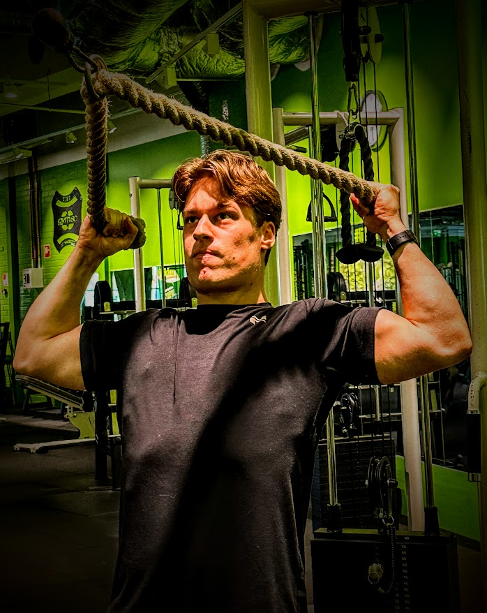

Tule mukaan Treenaamaan!
Kuka olen?
Veeti Mikkola
Olen 22 vuotias sertifioitu Personal Trainer, jolla on vuosien kokemus alalta. Koulutukseni ja jatkuva itseni kehittäminen takaavat, että pysyn ajan tasalla uusimmista harjoitusmenetelmistä ja ravitsemussuosituksista. Päätoimipaikkani on Myllypurossa, mutta tarjoan ohjausta ympäri Uusimaata.
Miksi teen tätä työtä?
Olen aina ollut kiinnostunut liikunnasta ja terveydestä. Personal Trainerina voin yhdistää intohimoni ja ammattitaitoni auttaakseni muita saavuttamaan omat tavoitteensa. Näen jokaisen asiakkaan yksilönä, ja minulle on tärkeää luoda henkilökohtainen ja motivoiva valmennuskokemus. Haluan olla tukena ja kannustajana matkallasi kohti parempaa hyvinvointia.
Ota yhteyttä ja varaa ilmainen konsultaatio, niin katsotaan sinulle paras tapa liikkua!
Miksi valita minut?
Yksilöllinen lähestymistapa: Jokainen asiakas on ainutlaatuinen, ja siksi suunnittelen jokaisen ohjelman vastaamaan juuri sinun tarpeitasi ja tavoitteitasi.
Kokemus ja asiantuntemus: Vuosien kokemus alalta ja jatkuva kouluttautuminen takaavat, että saat parasta mahdollista ohjausta ja tukea.
Motivaatio ja tuki: Olen kanssasi jokaisella askeleella, kannustaen ja tukien sinua matkallasi kohti parempaa hyvinvointia.
Koulutukseni ja Sertifikaattini
1. Kansainvälinen Personal Trainer -sertifikaatti (IPT)(2016)
2. Voimaharjoittelun erikoistumisohjelma (2016)
3. Kuntoutus ja liiketerapia -sertifikaatti (2017)
4. Ravintovalmentajan sertifikaatti (2017)
5. Senior Trainer -sertifikaatti (2020)
7. Online Personal Trainer -sertifikaatti (2022)
Asiakaspalautteita
“Olen todella tyytyväinen valmennukseen! Veeti auttoi minua saavuttamaan tavoitteeni ja ylittämään itseni. Hänen asiantuntemuksensa ja kannustuksensa olivat korvaamattomia.” - Mikko